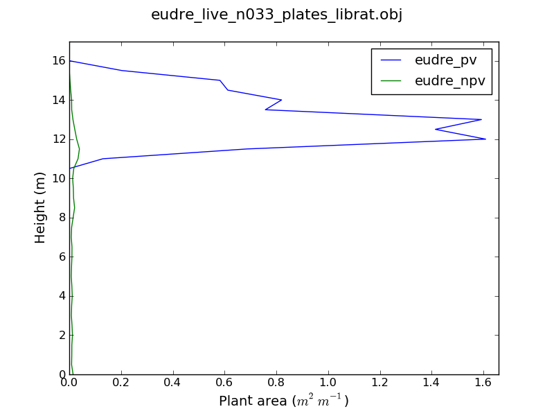
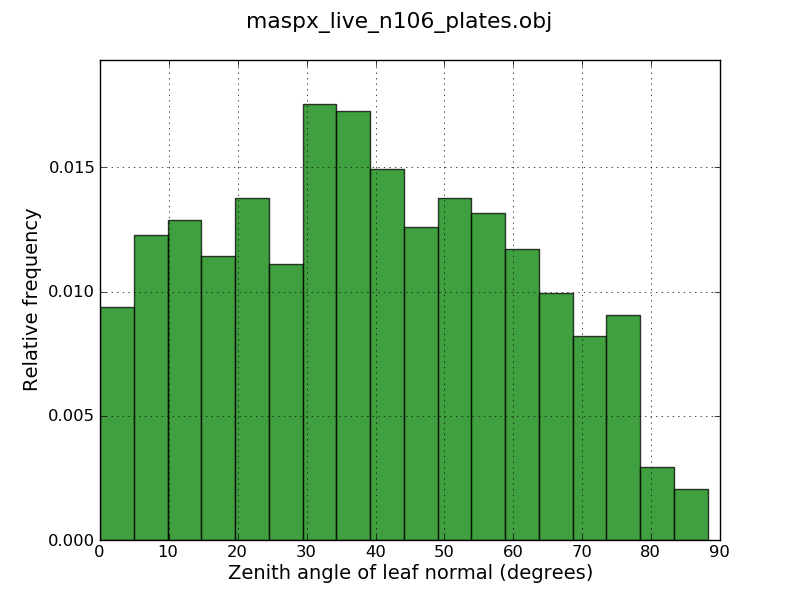

Tools
Location for tools developed by anyone using librat - please upload tool code, user info. and documentation if you have any.
Python tools for librat
librattools-0.1.tar.gz
LibratTools is a set of python modules that makes it easier (possibly only for me) to construct 3D tree/grass scenes using Eucalyptus tree models developed in the commercial software OnyxTree, derive/change structural attributes of these scenes, and automate lidar simulations. A good portion of the methods are Python implementations of ideas/CSH/AWK by Mat Disney. A start on Python bindings to the librat library using the Simplified Wrapper and Interface Generator (SWIG;
http://www.swig.org/) has also been added, which has been useful for testing and understanding the inner workings of librat where required.
These Python tools were written for my own use during the course of my Ph.D. They come without any warranty, or assurance that they will be useful in any way.
It is also important to note again that I have only used wavefront object files produced by the commercial software OnyxTree, so many of methods do not currently work with some types of objects found in librat *.obj files.
The following basic structure is also assumed for scene objects:
Download and untar to where you keep other Python packages/modules. You will need to make sure the path to the librattools-0.1 directory is in your PythonPath. The environment variable LIBRATTOOLS also needs to be set to this path.
"LibratTools" have been developed/tested using Python 2.6.4, with all dependent modules independently installed. I have not tested them using the Enthought Python distribution, but they might work if someone wants to try.
- Command line tools
- Python modules
1. Command line tools
scene_crown_map.py
Creates a scene crown extent map by fitting convex hulls to each tree object.
Usage:
$ scene_crown_map.py
Usage: scene_crown_map.py [options]
Options:
-h, --help show this help message and exit
-o OBJFILE, --objFile=OBJFILE
Librat object scene file.
-t TREEOBJFILE, --treeObjFile=TREEOBJFILE
Specify filename if the tree objects are cloned in a
#include object file.
-e EXTENT, --extent=EXTENT
X and Y extent. Default 50 m.
-y YCENTRE, --yCentre=YCENTRE
Y centre coordinate. Default 0.0.
-x XCENTRE, --xCentre=XCENTRE
X centre coordinate. Default 0.0.
-r RESOLUTION, --resolution=RESOLUTION
Spatial resolution of map. Default 0.1 m.
-f FORMAT, --format=FORMAT
Output file format (use GDAL driver names). Default
"ENVI"
The wavefront object scene file must be set.
Example output for a savanna scene:
onyxtree_vertical_profile.py or tree_vertical_profile
Derive and plot the vertical foliage profile of a tree from an OnyxTree (onyxtree_get_lad.py) or librat (tree_vertical_profile.py) wavefront tree object.
Note that leaf area is two-sided and that the difference between plate area and leaf area has not been accounted for.
Usage:
$ onyxtree_vertical_profile.py (OnyxTree) or tree_vertical_profile.py (librat)
Usage: onyxtree_vertical_profile.py or tree_vertical_profile [options]
Options:
-h, --help show this help message and exit
-o OBJFILE, --objFile=OBJFILE
OnyxTree wavefront object file.
-b BINSIZE, --binSize=BINSIZE
Vertical bin size (m). Default 0.5 m.
-m MAXVAL, --maxVal=MAXVAL
Maximum height value used to calculate profile.
Default 50m.
-p, --plot Plot resulting vertical profile. Default False.
The wavefront object file must be set.
Example output:

scene_vertical_profile.py
Derive the vertical profile of different materials within a scene.
Note that leaf area is two-sided and that the difference between plate area and leaf area has not been accounted for.
WARNING: This may take a while for a complex scene.
Usage:
Usage: scene_vertical_profile.py [options]
Options:
-h, --help show this help message and exit
-o OBJFILE, --objFile=OBJFILE
Wavefront object scene file.
-t TREEOBJFILE, --treeObjFile=TREEOBJFILE
Specify filename if the tree objects are cloned in a
#include object file.
-b BINSIZE, --binSize=BINSIZE
Vertical bin size (m). Default 0.5 m.
-m MAXVAL, --maxVal=MAXVAL
Maximum height value used to calculate profile.
Default 50m.
--xMax=XMAX Set maximum x bound on extracted profile
--yMax=YMAX Set maximum y bound on extracted profile
--xMin=XMIN Set minimum x bound on extracted profile
--yMin=YMIN Set minimum y bound on extracted profile
The wavefront object file and spatial bounds must be set.
onyxtree_get_lad.py
Retrieve and plot the leaf angle distribution of an OnyxTree object
Usage:
$ onyxtree_get_lad.py
Usage: onyxtree_get_lad.py [options]
Options:
-h, --help show this help message and exit
-o OBJFILE, --objFile=OBJFILE
OnyxTree wavefront object file.
-b BINSIZE, --binSize=BINSIZE
Bin size (degrees). Default 5 degrees.
-p, --plot Plot resulting LAD. Default False.
-n, --normed Normalise the LAD so the integral over the range is 1.
Default False.
The OnyxTree wavefront object file must be set.
Example output:

onyxtree_set_lad.py
Change the leaf angle distribution of an OnyxTree object
Usage:
$ onyxtree_set_lad.py
Usage: onyxtree_set_lad.py [options]
Options:
-h, --help show this help message and exit
-o OBJFILE, --objFile=OBJFILE
OnyxTree wavefront object file.
-n NEWFILE, --newFile=NEWFILE
New OnyxTree wavefront object filename (optional).
Default has distribution name appended to objFile
name.
-d DISTRIBUTION, --distribution=DISTRIBUTION
New LAD. Default is uniform "random" (spherical).
"uniform" is also currently available but mostly for
testing purposes.
-m MEANLEAFANGLE, --meanLeafAngle=MEANLEAFANGLE
Mean leaf angle (for applicable distributions).
The OnyxTree wavefront object file must be set.
Example output (vertical view) for uniform LAD:
Zenith of leaf normal = 10 degrees
|
Zenith of leaf normal = 45 degrees
|
Zenith of leaf normal = 80 degrees
|
|
|
|
onyxtree_get_par.py
Extract a number of commonly measured tree metrics from an OnyxTree file.
Usage:
$ onyxtree_get_par.py
Usage: onyxtree_get_par.py [options]
Options:
-h, --help show this help message and exit
-o OBJFILE, --objFile=OBJFILE
OnyxTree wavefront object file.
--outputFile=OUTPUTFILE
Output file name.
The OnyxTree wavefront object file must be set.
Example output:
LeafArea: 608.239971 # m^2
PlantArea: 624.566226 # m^2
MeanLeafAngle: 28.933967 # degrees (zenith of leaf normal)
DiamBreastHeight: 0.292475 # m (130cm height)
DiamBaseHeight: 0.324059 # m (30cm height)
TopHeight: 15.945580 # m
CrownBaseHeightLeaf: 11.042698 # m
CrownBaseHeightBough: 7.622293 # m
CrownArea: 34.342006 # m^2 (convex hull)
CrownDiameter: 7.657738 # m^2 (maximum)
make_scene.py
Create a tree/grass scene of clones with a random, clumped (Neyman-A), uniform or measured tree distribution.
Usage:
$ scene_make.py
Usage: scene_make.py [options]
Options:
-h, --help show this help message and exit
-m MATLIB, --matlib=MATLIB
Material library
-g GROUNDOBJ, --groundObj=GROUNDOBJ
librat object for ground
-e EXTENT, --extent=EXTENT
Scene extent (m)
-o OUTOBJ, --outObj=OUTOBJ
Output librat object scene file.
--doTree Include a tree layer.
--treeList=TREELIST List of tree clones.
--treeDist=TREEDIST Tree distribution (default: random)
--m2tree=M2TREE Neyman m2 (clumping) parameter for trees (default: 5)
--doGrass Include a grass layer.
--grassPlants=GRASSPLANTS
Number of unique grass swards (default: 10)
--grassDist=GRASSDIST
Grass distribution (default: random)
--m2grass=M2GRASS Neyman m2 (clumping) parameter for grass (default: 5)
--grassCover=GRASSCOVER
Grass cover (default: 0.5)
--grassHeight=GRASSHEIGHT
Grass height (m; default: 0.5)
--renameMaterials Rename materials to PV and NPV.
onyxtree_to_librat.py
Convert an OnyxTree file to a librat object file.
Usage:
Most of the hard work here is done by Mat's filtOnyx awk script.
$ onyxtree_to_librat.py
Usage: onyxtree_to_librat.py [options]
Options:
-h, --help show this help message and exit
-o OBJLIST, --objList=OBJLIST
Text file listing OnyxTree wavefront object files.
-l LAD, --lad=LAD New LAD. Default is to retain current.
--Trunk Remove this material from object. Default False.
--Bough Remove this material from object. Default False.
--Branch1 Remove this material from object. Default False.
--Branch2 Remove this material from object. Default False.
--Branch3 Remove this material from object. Default False.
--Twig Remove this material from object. Default False.
--Stem1 Remove this material from object. Default False.
--Leaf01 Remove this material from object. Default False.
--Leaf1 Remove this material from object. Default False.
The OnyxTree wavefront object file list must be set.
2. Python modules
The Python modules have number of classes and functions used in the above command line tools. Importing these modules from within Python are shown below. ${LIBRATTOOLS} (e.g. /usr/dev/librattools-0.1) needs to be in your PythonPath.
To see details on the classes and functions, navigate the html documents in the librattools-0.1.tar.gz docs/ directory.
$ python
Python 2.6.4 (r264:75706, Nov 11 2009, 14:04:05)
[GCC 4.4.2] on linux2
Type "help", "copyright", "credits" or "license" for more information.
>>> # Micellaneous numerical utilites
>>> from librattools import utilities
>>> # Methods for creating tree/grass scenes
>>> from librattools import libratscene
>>> # Methods for querying/modifying librat wavefront object files
>>> from librattools import libratobject
>>> # Methods for creating height, material and crown maps, HIPS I/O
>>> # Some methods require the librat "start" program to be in your path
>>> from librattools import libratmaps
>>> # Methods for querying/modifying OnyxTree wavefront object files
>>> from librattools import onyxtree
>>> # Methods for simulating airborne/terrestrial survey characteristics
>>> from librattools import lidarsurvey
>>> # Methods for running batch simulations on the QDERM HPC
>>> from librattools import pbsbatch
>>> # Methods for configuring camera/light files used by "start"
>>> from librattools import libratconfig
>>> # librat SWIG Python bindings
>>> import librat
The last module imported are the Python bindings to the librat library. For testing various components of librat, direct access to librat functions from Python can be quite handy. Most simulations will still require
start or a similar C program to iterate quickly, but further development of these tools for calling RATfront.c functions may help if Python scripting of librat simulations ever becomes required.
Once compiled,
librat.py and
_librat.so in ${LIBRATTOOLS}/src/swig needs to be added to your PythonPath.
To show what the interface is like, a very simple example of tracing a single ray is here:
simple_librat_example.py. More documentation on using these bindings might appear someday.